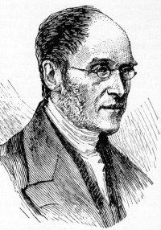

赖特 Henry Francis Lyte（1793-1847）

诗人小传
赖特弟兄，于一七九三年生在爱尔兰。他出身在一个很好的家庭，父亲从事于航海事业，是一个很有冒险犯难精神的人，可惜壮年时即去世。赖特弟兄在很小的时候，就失去父母，靠着半工半读完成大学的课程。他在青年时就蒙主拯救，艰苦的试炼更帮助他火热的爱主，并把一生奉献给主。他是在都柏林三一学院毕业的，从幼年起因饱受人生艰苦，使他常发奋努力，因此他的功课一直是名列前茅。毕业后曾有一段时间，在英国穷苦的信徒中间服事，直到二十二岁，才正式在教会中担任牧人的职分。他身体并不太好。一天一位为主做工的弟兄，在病重垂危的时候，受圣灵感动请赖特弟兄到他病床跟前，和他谈论属灵生命的问题。那时正是赖特弟兄属灵光景枯干的时候。那位弟兄和他诵读保罗的书信，圣灵在他心里大做工。那次他属灵的眼睛被开启，看见自己属灵的缺欠，并经历了在圣灵里的实际。因此赖特弟兄的生命，得着一个很大的转机，在事奉上充满了非常的能力。此后，在他一生的事奉中，真是果子累累和以往迥然不同，因他而得救的人，不可胜数。并且他的爱心，在当地教会中，对神的儿女更是一个极大的影响力量。他尽他所能的照顾弟兄姊妹，特别是对穷苦人家的孩子们，更加倍爱护。他自己生活虽然清苦，但是一直充满着天上的喜乐。
他曾经在多处做工，从一八二三年起，他自愿选择在一个偏僻穷苦的渔村里面事奉主。那些渔人的无知和粗暴，似乎不能欣赏这位工人的属灵生命。而赖特弟兄的身体，素来不强壮，经不起环境的磨练，因工作没有果效，更使他觉得担子沉重。在这样的重压之下，他就经常写诗，把心灵里的感觉，用诗歌发表出来。没想到神安排这样的环境，使他在重压之下，所流出来的生命——他的诗歌，却在以后的年日中，大大的祝福了普世的教会。以后，他尽所能的服事主，不顾自己的软弱；他耗尽了他的体力，终于好像灯油枯干了！医生嘱咐他一定要移地休息。因此在一八四七年，他就往义大利去，还没有达到目的地，到了Nice地方，想不到他竟在那里安然去世。在他弥留的时候，他指着上面说：“哦！平安，哦！喜乐。”